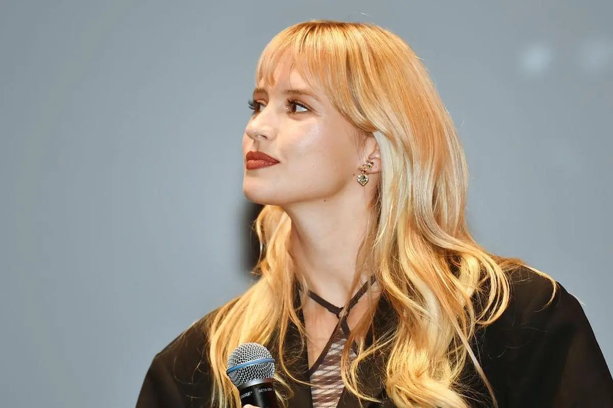

Angèle, la voix du féminisme

Biographie d’Angèle, chanteuse pop. Découvrez comment et pourquoi cette jeune artiste Belge est aujourd’hui considéré comme une véritable figure du féminisme moderne.
Femusic est un site dédié à la cause féministe dans le monde de la musique.
Découvrez des articles complets, actuels et passionnants mêlant musique et féminisme.

Biographie d’Angèle, chanteuse pop. Découvrez comment et pourquoi cette jeune artiste Belge est aujourd’hui considéré comme une véritable figure du féminisme moderne.
Découvrez comment le premier album d’Angèle « Brol » sortie en 2018 est une œuvre contemporaine et engagée.
De 1848 à nos jours de nombreux chanteurs et chanteuses s’exprime sur le féminisme. Découvrez dans cet article original et actuel 9 musique féministe à travers cette période.
Dernier clip musicale d'Angèle en featuring avec le rappeur Damso
ANGELE-Démons feat. Damso